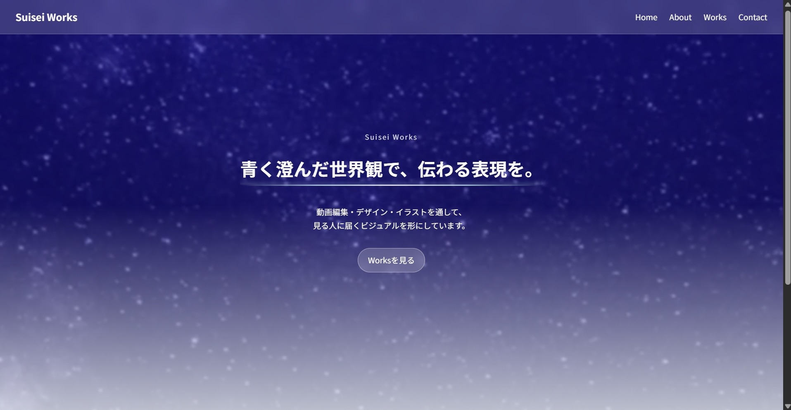

Web Design
Suisei Works
現在ご覧いただいているポートフォリオサイトです。

Overview
動画編集・デザイン・イラスト・Web制作などの制作実績をまとめるために制作したポートフォリオサイトです。 青、夜空、星、水、透明感のある世界観をベースに、複数ページ構成で実装しています。
担当範囲
- サイト構成設計
- HTML / CSS コーディング
- JavaScript実装
- レスポンシブ調整
- 作品一覧ページ制作
使用言語
HTML / CSS / JavaScript
制作ポイント
サイト全体の世界観が崩れないように、背景・装飾・カードUI・アニメーションを統一しました。 Homeは入口、Worksは一覧、作品詳細ページは個別説明という役割分けで設計しています。